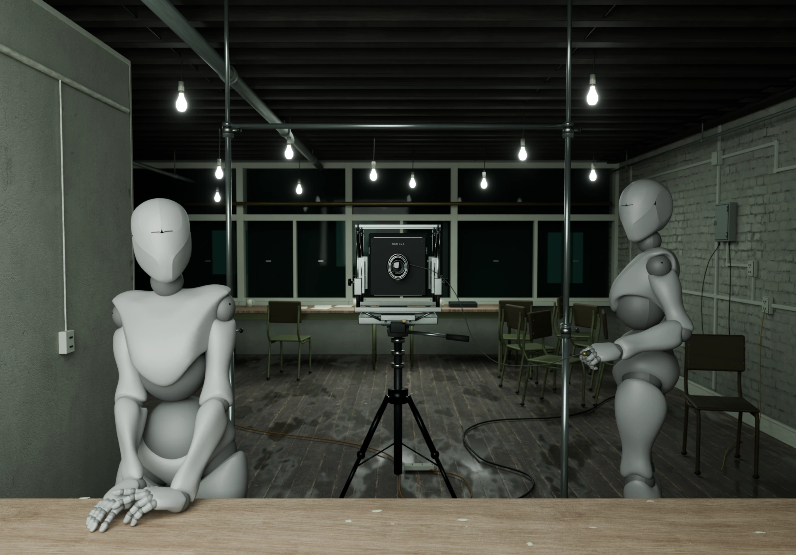

After Picture returns to Jeff Wall’s Picture for Women (1979), a staged photograph presented as a large illuminated transparency. In Wall’s picture, the mirror arranges the two figures, the camera, and the person looking. Rebuilding the room means making choices wherever the photograph leaves something unseen.
Here, the composition remains still while ceasing to be fixed. A shoulder rises. A finger moves. Light alters the weight of the room. The figures remain visibly constructed, even as a breath passes through them. After a while you might wonder whether a hand moved, or whether you simply looked more closely.
A little lean gives you more of the room. It also brings back a question already present in the mirror. Where are you standing in this arrangement of looking?
Breath repeats. Light returns. You can stay with a small change, then leave. After Picture is a picture with a present tense. What you see is what happened while you were here.
Picture for Women at the Centre Pompidou